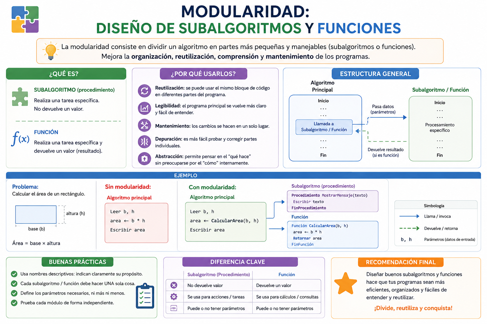

Si una fábrica de automóviles tuviera un solo operario encargado de fundir el motor, pintar la carrocería, colocar las ruedas y limpiar los cristales en un único bloque continuo, la producción colapsaría ante el menor error. La industria funciona aislando tareas especializadas en departamentos independientes. En programación, escribir miles de líneas de código seguidas es inviable; por ello, dividimos el programa en "módulos" o "funciones" independientes que resuelven una sola sub-tarea específica y pueden reutilizarse ilimitadamente.
⚠️ Debes visualizar el video completo sin adelantar para desbloquear la evaluación.
Material audiovisual adaptado con fines estrictamente educativos. Créditos del autor: Eductronica.

La modularidad es la filosofía de diseño de software basada en el paradigma de "divide y vencerás", fraccionando un problema complejo en bloques independientes de código denominados funciones o subprogramas.
¿Qué principio lógico y matemático fundamenta la modularidad en programación?
¿Qué es formalmente un subalgoritmo o función en el desarrollo de software?
¿Cuál es una de las ventajas operativas más destacadas de usar funciones?
¿Cuándo entra en ejecución el bloque de instrucciones contenido dentro de una función?
¿Cómo se denominan los datos o valores que recibe una función como datos de entrada para operar?
En la analogía de la fábrica de autos, ¿qué representaría una función especializada?
¿Qué característica de diseño debe cumplir el nombre o identificador de una función?
¿Cuando una función termina de resolver la sub-tarea encomendada, comúnmente qué devuelve al punto de origen:
¿Por qué la modularidad facilita el mantenimiento y la corrección de errores en un sistema de software?
¿Es válido invocar una función múltiples veces con distintos valores de parámetros de entrada?